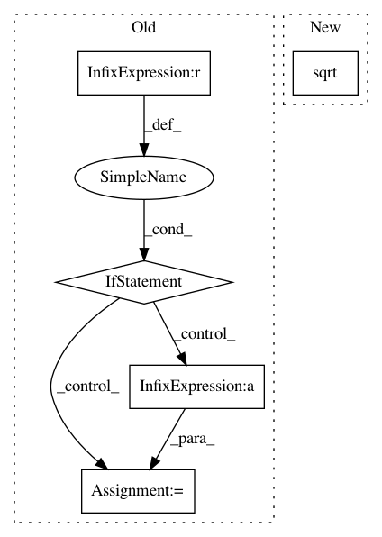

f947b1479e76dbeee06400e8d97b23bf64d0c8ff,librosa/segment.py,,recurrence_matrix,#,48
Before Change
t = X.shape[1]
if isinstance(k, float):
if 0 < k < 1:
k = np.ceil(k * t)
else:
raise ValueError("Valid values of k are strictly between 0 and 1.")
def _band_infinite():
"""Suppress the diagonal+- of a distance matrix"""
A = np.empty( (t, t) )
A[:] = np.inf
A[np.triu_indices_from(A, width)] = 0
A[np.tril_indices_from(A, -width)] = 0
return A
// Build the distance matrix
D = scipy.spatial.distance.squareform(
scipy.spatial.distance.pdist(X.T, metric=metric))
// Max out the diagonal band
D = D + _band_infinite()
// build the recurrence plot
R = np.zeros( (t, t), dtype=bool)
// get the k nearest neighbors for each point
for i in range(t):
for j in np.argsort(D[i])[:k]:
R[i, j] = True
// symmetrize
if sym:
R = R * R.T
return R
def structure_feature(R, pad=True):
"""Compute the structure feature from a recurrence matrix.
The i"th column of the recurrence matrix is shifted up by i.
The resulting matrix is indexed horizontally by time,
and vertically by lag.
:parameters:
- R : np.ndarray, shape=(t,t)
recurrence matrix (see `librosa.segment.recurrence_matrix`)
- pad : boolean
:returns:
- L : np.ndarray
``L[i, t]`` = the recurrence at time ``t`` with lag ``i``.
.. note:: negative lag values are supported by wrapping to the end of the array.
:raises:
- ValueError
if R is not square
"""
t = R.shape[0]
if t != R.shape[1]:
raise ValueError("R must be a square matrix")
if pad:
L = np.vstack( ( R, np.zeros_like(R) ) )
else:
L = R.copy()
for i in range(1, t):
L[:, i] = np.roll(L[:, i], -i, axis=-1)
return L
def agglomerative(data, k):
Bottom-up temporal segmentation
:parameters:
- data : np.ndarray
feature matrix (d-by-t)
- k : int > 0
number of segments to produce
:returns:
- boundaries : np.ndarray, shape=(k,1)
left-boundaries (frame numbers) of detected segments
After Change
t = data.shape[1]
if k is None:
k = np.ceil(np.sqrt(t))
def _band_infinite():
"""Suppress the diagonal+- of a distance matrix"""
In pattern: SUPERPATTERN
Frequency: 3
Non-data size: 5
Instances
Project Name: librosa/librosa
Commit Name: f947b1479e76dbeee06400e8d97b23bf64d0c8ff
Time: 2013-11-21
Author: brm2132@columbia.edu
File Name: librosa/segment.py
Class Name:
Method Name: recurrence_matrix
Project Name: keras-team/keras-preprocessing
Commit Name: 75c9e8cbcd9da21591cd5f8aaaa99205f48fa606
Time: 2021-01-19
Author: eli.osherovich@gmail.com
File Name: keras_preprocessing/image/image_data_generator.py
Class Name: ImageDataGenerator
Method Name: fit
Project Name: scikit-image/scikit-image
Commit Name: 2b83e8e84873a2f5cf81d0a8e848324dee974071
Time: 2020-03-24
Author: danielleholzberger@gmail.com
File Name: skimage/transform/_geometric.py
Class Name: SimilarityTransform
Method Name: scale